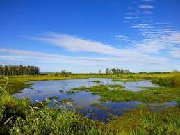

Trabalho de Geografia - Relevo da América Latina
Muitos países latino-americanos têm planícies costeiras que se estendem ao longo do oceano. Essas planícies costumam ser áreas férteis e densamente povoadas, pois oferecem condições favoráveis para a agricultura e a habitação.
[ ! ] Planícies costeiras: esse tipo está localizado ao longo da faixa litorânea de mares e oceanos, logo, é formado por sedimentos provenientes desses corpos de água. Planícies lacustres: essa tipologia é específica de zonas banhadas por lagos e lagoas, cujos sedimentos locais são oriundos dessas fontes de água.
_____